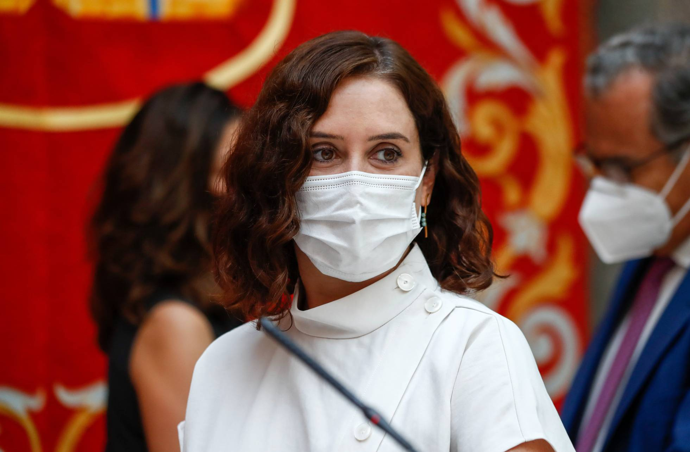
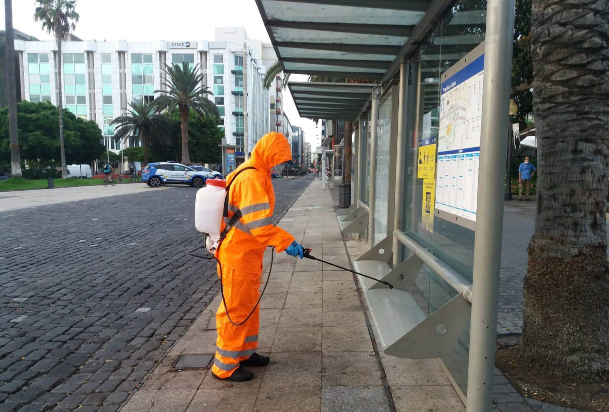

Ayuso anuncia una "operación retorno" para frenar el avance del Covid en Madrid
Así, ha precisado que se está estudiando reducir el número de personas al que están limitadas las reuniones, que actualmente es de 10 tanto en espacios abiertos como cerrados, "porque ahora mismo es donde se está produciendo el mayor número de contagios". "Ojalá no tuviéramos que aplicar estas medidas, nadie se imagina lo que lo lamento, porque es todo el rato coartando libertad y estudiando qué tienen que hacer los demás, que es algo que a mí me horroriza", ha expresado Ayuso. Sin embargo, según ha manifestado, "toca en estos instantes recordar una y otra vez que no se están guardando en algunas ocasiones las distancias de seguridad", algo "muy español y mediterráneo", con "la cuestión de los abrazos, el estar todos juntos", y ha subrayado que "hemos de acostumbrarnos a separarnos mucho". También ha destacado la importancia de "cuidar al vulnerable", a las personas que tienen patologías y unas edades determinadas, aunque ha señalado que ya se está haciendo y que por eso han bajado los contagios en estas edades. "Pero no nos podemos relajar, ni siquiera cuando conocemos a la persona con la que nos encontramos. No vale dar un abrazo a un amigo de toda la vida pensando que como le conoces desde siempre el virus no se va a propagar entre los dos. Puede que uno de los dos sea asintomático y le esté causando un daño enorme al otro", ha advertido. Por otro lado, ha aclarado que "en un principio no está estudiado" aislar Madrid e impedir salir de la comunidad, aunque ha recalcado que es "una región muy vulnerable", para agregar que por eso desde el mes de mayo le pidió al Gobierno una "estrategia para cuidar esta comunidad". En este sentido, ha dicho que Madrid tiene "el kilómetro cero" de las carreteras y de la red ferroviaria, "todo el mundo tiene familia en Madrid, que trabaja, que estudia...", además de tener el Aeropuerto de Madrid Barajas, que, según ha señalado Ayuso, el Gobierno de la Comunidad de Madrid tiene claro que "fue el comienzo del virus en España". "Pero no está en nuestras mentes cerrarlo, nosotros no tenemos competencia de todas formas para ello, pero sí que tenemos que seguir con las medidas que nos otorga el estado de las autonomías", ha apostillado la presidenta madrileña.

La automoción española vuelve a contratar tras los peores meses de la crisis
La aplicación de vídeos cortos Triller ofrece 20.000 millones de dólares por TikTok
Musk presenta un chip probado en cerdos para medir la actividad cerebral
La empresa Neuralink, en la que Elon Musk, el propietario de la fabricante de automóviles Tesla y la compañía espacial SpaceX, es el socio principal, ha probado con éxito en cerdos un chip que implantado en el cráneo permite medir la actividad cerebral, pero va a tener muchas más aplicaciones. Musk mostró algunos cerdos implantados en un acto transmitido en vivo este viernes, que tenía como objetivo contratar técnicos para su empresa emergente Neuralink, creada en 2016 con el fin de desarrollar una interfaz cerebro-dispositivo sin cables. El empresario fue mostrando varios cerdos, uno con el chip ya implantado, otro que lo tuvo pero ya se lo quitaron y otro virgen en esta materia, pero todos ellos "felices y sanos", como manera de resaltar que la implantación no supone ningún cambio en el animal, según puede verse en el vídeo colgado en Youtube.
Los rebrotes llevan a Arrecife y Las Palmas a tasas por encima de Madrid
Los rebrotes de coronavirus que han sufrido Arrecife, en Lanzarote, y Las Palmas de Gran Canaria han llevado a ambas ciudades a presentar en estos momentos tasas de incidencia de Covid-19 superiores a la registrada en la Comunidad Madrid, la región más afectada de España. Según los últimos datos publicados por la Consejería de Sanidad del Gobierno canario, correspondientes a las 14.00 horas de este sábado, Canarias tiene en estos momentos 3.662 casos activos de Covid-19, de los que 2.095 (el 57 % del total) corresponden a Las Palmas de Gran Canaria; 418, a Santa Cruz de Tenerife (el 11 %); 351, a Arrecife (el 9,5 %); y 146, a La Laguna (3,9 %). Si se toma como referencia el indicador de casos diagnosticados en los últimos 14 días, Canarias presenta una tasa de 130,49 positivos por 100.000 habitantes en las últimas dos semanas, por debajo de la media nacional (189,61), de acuerdo con el Ministerio de Sanidad (últimos datos disponibles, del viernes 28 de agosto). A la cabeza de España en incidencia acumulada en los últimos 14 días están la Comunidad de Madrid, con 416,39 positivos por 100.000 habitantes; Aragón, con 378,76; y el País Vasco, con 309,63. Por encima de esos indicadores están dos municipios urbanos de Canarias: Arrecife, la capital de Lanzarote, con 444,31 casos por 100.000 habitantes en los últimos 14 días; y Las Palmas de Gran Canaria, con 422,72. En ambas islas, Gran Canaria y Lanzarote, se aplican desde ayer medidas reforzadas, que prohíben cualquier acto público (cultural, deportivo, religioso o de cualquier índole) que reúna a más de 10 personas, adelantan el cierre de la hostelería a las 0.00 horas y, en algunos casos, han llevado al cierre preventivo de playas donde no se respetaban las medidas de seguridad.
